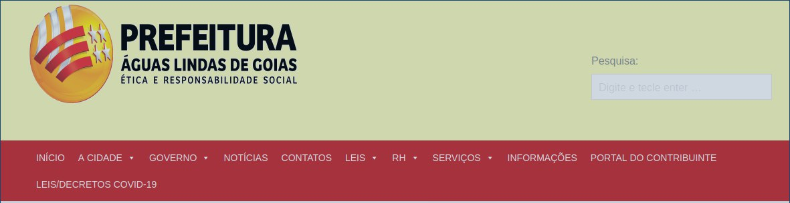

Teste de usabilidade - Acessar informações da economia
Preparação
A tarefa principal que o participante deve executar é a busca por informações do PIB da cidade de Aguas Lindas de Goiás. O roteiro da avaliação consiste no participante ser informado sobre a ação que ele deve executar e ao fim da ação, ele deve responder a um questionário a respeito da qualidade de uso, como no quadro abaixo:
| Impressões do participante |
|---|
| Como você avalia a facilidade de distinguir os elementos do site? |
| Os ícones do site te auxiliaram na hora de encontrar o que desejava? |
| O design do site te agrada? |
| O que te ajudou/atrapalhou mais na realização da tarefa? |
Participante
A participante tem 45 anos, é professora de Geografia pós graduada em Docência do Ensino Superior. Geralmente trabalha com alunos do Ensino Médio e utiliza cartazes e vídeos em suas aulas. Possui baixo nível de conhecimento em informática.
Materiais
Os materiais utilizados na avaliação foram:
- Computador com acesso à internet
- Teclado/Mouse no padrão brasileiro
- Monitor de computador
- O site da prefeitura aberto em tela cheia
- Cadeira que permite ajuste para uma boa vizualização da tela
- Cronômetro para medir o tempo de cada ação
Teste piloto
O teste piloto foi realizado de forma que os materiais e o site fossem validados e assim avançar a avaliação com a participante. O resultado foi satisfatório, a ação pôde ser feita sem interrupções por parte dos equipamentos e do software.
Coleta de dados
A participante foi orientada a sentar-se e informada de sua tarefa a ser realizada, o aviso foi dado e o cronômetro disparado de modo que a participante fosse autorizada a iniciar sua ação. O quadro abaixo dispõe os pontos principais da execução da tarefa:
| Descrição da ação | Tempo em segundos |
|---|---|
| Acessar o mouse com a mão | 1.2 |
| Observar a pagina | 3.3 |
| Levar curso até imagem(1)* | 3.1 |
| Levar cursor à imagem(2)* | 1.6 |
| Levar curso à imagem(3)* | 4.1 |
| Levar cursor ao menu | 3.2 |
| Reconhecer os itens | 5.7 |
| Navegar até o I. Portal do contribuinte | 2.1 |
| Navegar até o I. Serviços | 1.8 |
| Ler os subitens de Serviços | 6.8 |
| Navegar/ler o I. RH | 8.3 |
| Navegar/ler o I. Leis | 9.5 |
| Navegar até o I. Contatos | 1.0 |
| Navegar até o I. Notícias | 1.2 |
| Navegar até o I. Governo | 0.5 |
| Navegar até o I. A Cidade | 0.8 |
| Levar o cursor até o subitem Economia | 1.2 |
| Clicar em Economia | 0.5 |
| Total | 55.9 |
Legenda:
-
"I." quer dizer "item"
-
A imagem(x) está disposta nos anexos
Interpretação e consolidação dos resultados
Perspectiva do participante
A participante se queixou de dificuldade de distiguir os itens do menu, o que a fez demorar mais que o normal para ler cada item, de acordo com a mesma.
A respeito do Design, a participante comentou que não sentiu vontade de voltar a usar o site por ser de difícil leitura dos elementos e porque teve dificuldade de encontrar o que procurava.
Quanto aos ícones, a participante se queixou de ter demorado mais a achar a opção desejada pois gastou bastante tempo refletindo se a opção que estava a observar era a correta.
Observações técnicas
- O site apresenta falhas graves de usabilidade quando se observa o uso por usuários pouco familiares com o mesmo.
- Os elementos estão dispostos de forma arbitrária e com acossiação fraca na relação nome/objetivo.
- O design do site está fora do padrão, o que faz com que os usuários não tenham vontade de usá-lo novamente.
- A disposição dos elementos do site causam confusão ao usuário, onde o mesmo demora mais do que o normal para encontrar uma opção desejada no menu.
Resultados
Sujestões de melhoria
- Trazer o site para um padrão de design mais atual fará com que o usuário se sinta mais familiarizado com o modo com que o site funciona, diminuíndo o tempo de busca pela ferramenta desejada.
- Os nomes dos itens no menu devem ser reescritos e testados de forma que se use termos mais comuns ao cotidiano de um cidadão comum (o público alvo desse site).
- As cores do site devem ser revisadas e os elementos destiguidos de forma que o contraste seja maior e os itens se tornem mais evidentes.
Anexos
Fig.1 Artigo

Fig.2 Boletim informativo

Fig.3 Card de informações

Fig.4 Menu
Referências
- Livro: BARBOSA, S. D. J.; SILVA, B. S. Interação Humano-Computador. 1ª edição, Rio de Janeiro: Elsevier, 2010.
- Site Prefeitura de Águas Lindas de Goiás acessado em: 28/10/2020 às 13:12.
Versionamento
| Data | Versão | Descrição | Autor |
|---|---|---|---|
| 28/10 | V0 | Criação do documento | Bruna Almeida |
| 28/10 | V1 | Criação do Teste | Hugo Aragão |
| 28/10 | V2 | Revisão | Hugo Aragão |